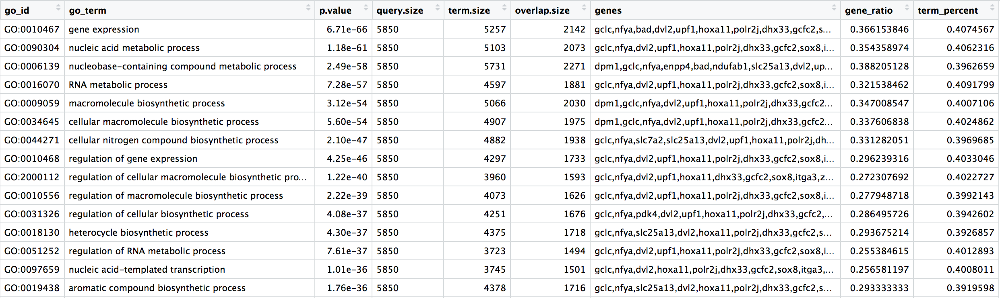

library(tidyverse)19 Tidyverse
20 Data Wrangling with Tidyverse
The Tidyverse suite of integrated packages are designed to work together to make common data science operations more user friendly. The packages have functions for data wrangling, tidying, reading/writing, parsing, and visualizing, among others. There is a freely available book, R for Data Science, with detailed descriptions and practical examples of the tools available and how they work together. We will explore the basic syntax for working with these packages, as well as, specific functions for data wrangling with the ‘dplyr’ package and data visualization with the ‘ggplot2’ package.

20.1 Tidyverse basics
The Tidyverse suite of packages introduces users to a set of data structures, functions and operators to make working with data more intuitive, but is slightly different from the way we do things in base R. Two important new concepts we will focus on are pipes and tibbles.
Before we get started with pipes or tibbles, let’s load the library:
20.1.1 Pipes
Stringing together commands in R can be quite daunting. Also, trying to understand code that has many nested functions can be confusing.
To make R code more human readable, the Tidyverse tools use the pipe, %>%, which was acquired from the magrittr package and is now part of the dplyr package that is installed automatically with Tidyverse. The pipe allows the output of a previous command to be used as input to another command instead of using nested functions.
NOTE: Shortcut to write the pipe is shift + command + M
An example of using the pipe to run multiple commands:
## A single command
sqrt(83)[1] 9.110434## Base R method of running more than one command
round(sqrt(83), digits = 2)[1] 9.11## Running more than one command with piping
sqrt(83) %>% round(digits = 2)[1] 9.11The pipe represents a much easier way of writing and deciphering R code, and so we will be taking advantage of it, when possible, as we work through the remaining lesson.
20.1.2 Tibbles
A core component of the tidyverse is the tibble. Tibbles are a modern rework of the standard data.frame, with some internal improvements to make code more reliable. They are data frames, but do not follow all of the same rules. For example, tibbles can have numbers/symbols for column names, which is not normally allowed in base R.
Important: tidyverse is very opininated about row names. These packages insist that all column data (e.g. data.frame) be treated equally, and that special designation of a column as rownames should be deprecated. Tibble provides simple utility functions to handle rownames: rownames_to_column() and column_to_rownames().
Tibbles can be created directly using the tibble() function or data frames can be converted into tibbles using as_tibble(name_of_df).
NOTE: The function
as_tibble()will ignore row names, so if a column representing the row names is needed, then the functionrownames_to_column(name_of_df)should be run prior to turning the data.frame into a tibble. Also,as_tibble()will not coerce character vectors to factors by default.
20.2 Experimental data
We’re going to explore the Tidyverse suite of tools to wrangle our data to prepare it for visualization. Make sure you have the file called gprofiler_results_Mov10oe.tsv.
The dataset:
- Represents the functional analysis results, including the biological processes, functions, pathways, or conditions that are over-represented in a given list of genes.
- Our gene list was generated by differential gene expression analysis and the genes represent differences between control mice and mice over-expressing a gene involved in RNA splicing.
The functional analysis that we will focus on involves gene ontology (GO) terms, which:
- describe the roles of genes and gene products
- organized into three controlled vocabularies/ontologies (domains):
- biological processes (BP)
- cellular components (CC)
- molecular functions (MF)

20.3 Analysis goal and workflow
Goal: Visually compare the most significant biological processes (BP) based on the number of associated differentially expressed genes (gene ratios) and significance values by creating the following plot:
To wrangle our data in preparation for the plotting, we are going to use the Tidyverse suite of tools to wrangle and visualize our data through several steps:
- Read in the functional analysis results
- Extract only the GO biological processes (BP) of interest
- Select only the columns needed for visualization
- Order by significance (p-adjusted values)
- Rename columns to be more intuitive
- Create additional metrics for plotting (e.g. gene ratios)
- Plot results
20.4 Instructions
Find a partner (or a group of 3 if needed). Choose one person to go through the following steps using Tidyverse, and the other using base R. It is recommended that the person with more experience attempt the steps in base R.
20.5 Tidyverse tools
While all of the tools in the Tidyverse suite are deserving of being explored in more depth, we are going to investigate more deeply the reading (readr), wrangling (dplyr), and plotting (ggplot2) tools.
20.6 1. Read in the functional analysis results
While the base R packages have perfectly fine methods for reading in data, the readr and readxl Tidyverse packages offer additional methods for reading in data. Let’s read in our tab-delimited functional analysis results gprofiler_results_Mov10oe.tsv using read_delim(). Name the dataframe functional_GO_results.
Use one of the base R read.X functions to read in the tab delimited file gprofiler_results_Mov10oe.tsv. Name the dataframe functional_GO_results.
Double check the data types and format of your dataframe. Do the methods yield the same result? Convert anything you think should be a factor into a factor.
NOTE: A large number of tidyverse functions will work with both tibbles and dataframes, and the data structure of the output will be identical to the input. However, there are some functions that will return a tibble (without row names), whether or not a tibble or dataframe is provided.
20.7 2. Extract only the GO biological processes (BP) of interest
Now that we have our data, we will need to wrangle it into a format ready for plotting. To extract the biological processes of interest, we only want those rows where the domain is equal to BP.
For all of our data wrangling steps we will be using tools from the dplyr package, which is a swiss-army knife for data wrangling of data frames.
To extract the biological processes of interest, we only want those rows where the domain is equal to BP, which we can do using the filter() function.
To filter rows of a data frame/tibble based on values in different columns, we give a logical expression as input to the filter() function to return those rows for which the expression is TRUE.
Perform an additional filtering step to only keep those rows where the relative.depth is greater than 4.
Use a conditional expression and indexing ([]) to extract the rows where the domain is equal to BP.
Perform an additional indexing step to only keep those rows where the relative.depth is greater than 4.
Now we have returned only those rows with a domain of BP. How have the dimensions of our results changed?
20.8 3. Select only the columns needed for visualization
For visualization purposes, we are only interested in the columns related to the GO terms, the significance of the terms, and information about the number of genes associated with the terms.
To extract columns from a data frame/tibble we can use the select() function. In contrast to base R, we do not need to put the column names in quotes for selection.
Select the columns term.id, term.name, p.value, query.size, term.size, overlap.size, intersection.
Index the columnsterm.id, term.name, p.value, query.size, term.size, overlap.size, intersection.
Both indesing and the select() function also allows for negative selection. However, select allows for negtaive selection using column names, while in base R we can only do so with indexes. Note that we need to put the column names inside of the combine (c()) function with a - preceding it for this functionality.
To use column names in base R, we have to use %in%:
# Selecting columns to keep
idx <- !(colnames(functional_GO_results) %in% c("query.number", "significant", "recall", "precision", "subgraph.number", "relative.depth", "domain"))20.9 4. Order GO processes by significance (adjusted p-values)
Now that we have only the rows and columns of interest, let’s arrange these by significance, which is denoted by the adjusted p-value.
Sort the rows by adjusted p-value with the arrange() function.
Sort the rows by adjusted p-value with the order() function.
NOTE: If you wanted to arrange in descending order, then you could have run the following instead:
# Order by adjusted p-value descending
functional_GO_results <- functional_GO_results %>%
arrange(desc(p.value))NOTE: Ordering variables in ggplot2 is a bit different. This post introduces a few ways of ordering variables in a plot.
20.10 5. Rename columns to be more intuitive
While not necessary for our visualization, renaming columns more intuitively can help with our understanding of the data. Let’s rename the term.id and term.name columns.
Rename term.id and term.name to GO_id and GO_term using the rename function. Note that you may need to call rename as dplyr::rename, since rename is a common function name in other packages.
The syntax is new_name = old_name.
Rename term.id and term.name to GO_id and GO_term using colnames and indexing.
20.11 6. Create additional metrics for plotting (e.g. gene ratios)
Finally, before we plot our data, we need to create a couple of additional metrics. Let’s generate gene ratios to reflect the number of DE genes associated with each GO process relative to the total number of DE genes.
This is calculated as gene_ratio = overlap.size / query.size.
The mutate() function enables you to create a new column from an existing column.
Create a new column in the dataframe using the $ syntax or cbind.
The mutate() function enables you to create a new column from an existing column.

20.12 Compare code
Take a look at your code verses your partner’s code. Which method do you think results in cleaner, more readable code? Which steps were easier in base R, and which in Tidyverse?
20.12.1 Additional resources
The materials in this lesson have been adapted from work created by the (HBC)](http://bioinformatics.sph.harvard.edu/) and Data Carpentry (http://datacarpentry.org/). These are open access materials distributed under the terms of the Creative Commons Attribution license (CC BY 4.0), which permits unrestricted use, distribution, and reproduction in any medium, provided the original author and source are credited.